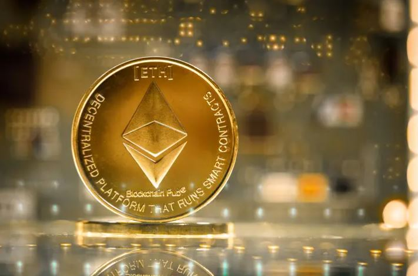
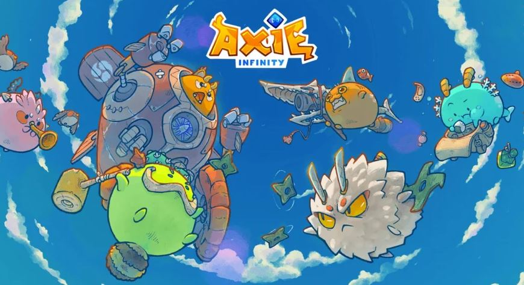

Contato
Sobre
Ethereum
Ethereum é uma plataforma descentralizada capaz de executar contratos inteligentes e aplicativos descentralizados usando a tecnologia blockchain, são aplicativos que funcionam exatamente como programados sem qualquer possibilidade de censura, fraude ou interferência de terceiros. Foi fundado por Vitalik Buterin em janeiro de 2014 e apresentado formalmente à comunidade na forma de um white paper. Descentralizada de Turing completa, a Ethereum Virtual Machine (EVM), que pode executar scripts usando uma rede internacional de nós públicos
O Ether usa uma estrutura de programação que usa pontos flutuantes permitindo que ele seja fracionado em escalas decimais muito pequenas. O desenvolvimento foi financiado como um projeto de crowdfunding de mais de 18 milhões de dólares. A versão de lançamento atual é considerada pelos desenvolvedores como instável e insegura, e os usuários da rede são aconselhados a tomar as precauções necessárias. m 2016, ela foi bifurcada e sua blockchain foi dividida em duas graças ao colapso do projeto The DAO, e com isso nasceu o Ethereum Classic. O valor da moeda foi causado por um roubo milionário no valor de 32 milhões de dólares no segundo semestre de 2017. Hackers exploraram uma falha em uma carteira virtual multi-assinatura, que exigia validações de várias pessoas para usar seu fundo. Em junho de 2017, rumores se espalharam pela rede que divulgavam informações sobre moedas virtuais que o criador do Ethereum, Vitalik, havia falecido.
Axie Infinity
Axie Infinity é um jogo pay-to-earn a base de ethereum lançado em 2020. Tornou-se extremamente popular com o boom das moedas digitais ao longo de 2021. O jogo tem um sistema de recompensa de criptomoedas e jogabilidade de estratégia que mistura Pokémon com jogos de cartas. Cada jogador tem 20 pontos de energia, recuperados diariamente às 21:00 GMT.Axie Infinity é um jogo que realmente recompensa seus jogadores, gerando renda através de criptomoedas que podem ser convertidas em dólares, reais e etc. Tradicionalmente, é necessário comprá-las com WETH, uma forma de éter (ETH) A primeira criptomoeda pode ser adquirida por todos os jogadores através do modo competitivo. Os preços de cada Axie variam muito, assim como a economia do jogo.
No auge em julho de 2021, os monstrinhos custam nada menos que US$ 200. No entanto, os valores desses NFTs despencaram para cerca de US$ 25 em fevereiro de 2022. Pela minha própria experiência, não vale a pena jogar casualmente. Existem nove tipos de monstrinhos: Besta, Inseto, Mech, Aqua, Bird, Dawn, Plant, Réptil e Crepúsculo. Tal como acontece com Pokémon, cada classe tem vantagens e desvantagens naturais em relação às outras. As partidas são entre equipes de três monstrinhos. Cada monstrinho pode realizar até três ações em um único turno.
